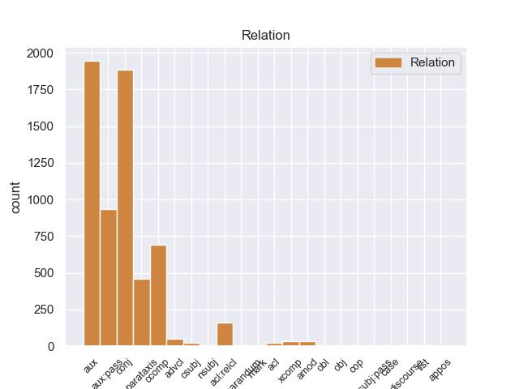
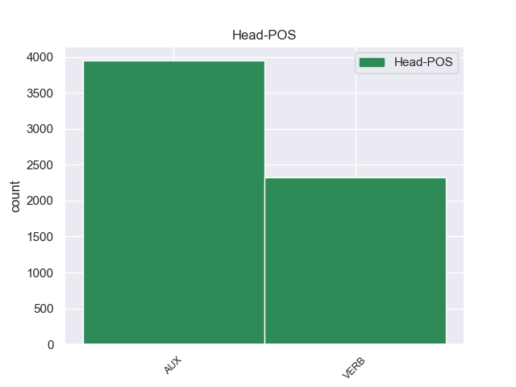
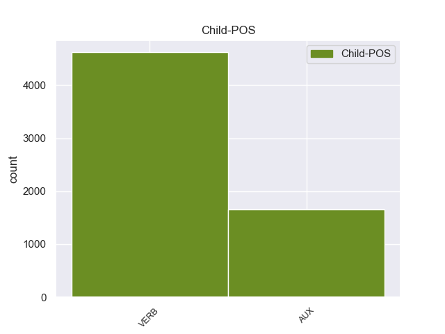

Distribution of features within this leaf



Agreement Rules sorted by frequency.
- When the dependent token is the conjunct(conj) of the head token, and the head token is VERB and the dependent token is VERB.
1 He _ _ _ _ 0 _ _ _
2 said say VERB VBD Mood=Ind|Tense=Past|VerbForm=Fin 0 _ _ _
3 it _ _ _ _ 0 _ _ _
4 was _ _ _ _ 0 _ _ _
5 the _ _ _ _ 0 _ _ _
6 same _ _ _ _ 0 _ _ _
7 tire _ _ _ _ 0 _ _ _
8 , _ _ _ _ 0 _ _ _
9 and _ _ _ _ 0 _ _ _
10 verified verify VERB VBD Mood=Ind|Tense=Past|VerbForm=Fin 2 conj 2:conj:and _
11 this _ _ _ _ 0 _ _ _
12 , _ _ _ _ 0 _ _ _
13 after _ _ _ _ 0 _ _ _
14 checking _ _ _ _ 0 _ _ _
15 both _ _ _ _ 0 _ _ _
16 the _ _ _ _ 0 _ _ _
17 actual _ _ _ _ 0 _ _ _
18 tire _ _ _ _ 0 _ _ _
19 on _ _ _ _ 0 _ _ _
20 my _ _ _ _ 0 _ _ _
21 car _ _ _ _ 0 _ _ _
22 and _ _ _ _ 0 _ _ _
23 my _ _ _ _ 0 _ _ _
24 service _ _ _ _ 0 _ _ _
25 papers _ _ _ _ 0 _ _ _
26 from _ _ _ _ 0 _ _ _
27 earlier _ _ _ _ 0 _ _ _
28 in _ _ _ _ 0 _ _ _
29 the _ _ _ _ 0 _ _ _
30 week _ _ _ _ 0 _ _ _
31 . _ _ _ _ 0 _ _ _
1 I _ _ _ _ 0 _ _ _
2 had have AUX VBD Mood=Ind|Tense=Past|VerbForm=Fin 0 _ _ _
3 wanted want VERB VBN Tense=Past|VerbForm=Part 2 aux 0:root _
4 to _ _ _ _ 0 _ _ _
5 split _ _ _ _ 0 _ _ _
6 the _ _ _ _ 0 _ _ _
7 total _ _ _ _ 0 _ _ _
8 between _ _ _ _ 0 _ _ _
9 a _ _ _ _ 0 _ _ _
10 credit _ _ _ _ 0 _ _ _
11 card _ _ _ _ 0 _ _ _
12 and _ _ _ _ 0 _ _ _
13 check _ _ _ _ 0 _ _ _
14 card _ _ _ _ 0 _ _ _
15 since _ _ _ _ 0 _ _ _
16 I _ _ _ _ 0 _ _ _
17 was _ _ _ _ 0 _ _ _
18 being _ _ _ _ 0 _ _ _
19 reimbursed _ _ _ _ 0 _ _ _
20 for _ _ _ _ 0 _ _ _
21 the _ _ _ _ 0 _ _ _
22 tire _ _ _ _ 0 _ _ _
23 but _ _ _ _ 0 _ _ _
24 was _ _ _ _ 0 _ _ _
25 told _ _ _ _ 0 _ _ _
26 this _ _ _ _ 0 _ _ _
27 was _ _ _ _ 0 _ _ _
28 n't _ _ _ _ 0 _ _ _
29 possible _ _ _ _ 0 _ _ _
30 . _ _ _ _ 0 _ _ _
1 A _ _ _ _ 0 _ _ _
2 few _ _ _ _ 0 _ _ _
3 minutes _ _ _ _ 0 _ _ _
4 after _ _ _ _ 0 _ _ _
5 I _ _ _ _ 0 _ _ _
6 left _ _ _ _ 0 _ _ _
7 , _ _ _ _ 0 _ _ _
8 I _ _ _ _ 0 _ _ _
9 was be AUX VBD Mood=Ind|Number=Sing|Person=1|Tense=Past|VerbForm=Fin 0 _ _ _
10 called call VERB VBN Tense=Past|VerbForm=Part|Voice=Pass 9 aux:pass 0:root _
11 and _ _ _ _ 0 _ _ _
12 informed _ _ _ _ 0 _ _ _
13 that _ _ _ _ 0 _ _ _
14 " _ _ _ _ 0 _ _ _
15 I _ _ _ _ 0 _ _ _
16 " _ _ _ _ 0 _ _ _
17 left _ _ _ _ 0 _ _ _
18 my _ _ _ _ 0 _ _ _
19 wheel _ _ _ _ 0 _ _ _
20 lock _ _ _ _ 0 _ _ _
21 ( _ _ _ _ 0 _ _ _
22 which _ _ _ _ 0 _ _ _
23 they _ _ _ _ 0 _ _ _
24 should _ _ _ _ 0 _ _ _
25 have _ _ _ _ 0 _ _ _
26 left _ _ _ _ 0 _ _ _
27 in _ _ _ _ 0 _ _ _
28 the _ _ _ _ 0 _ _ _
29 car _ _ _ _ 0 _ _ _
30 ) _ _ _ _ 0 _ _ _
31 . _ _ _ _ 0 _ _ _
1 Supposedly _ _ _ _ 0 _ _ _
2 they _ _ _ _ 0 _ _ _
3 will _ _ _ _ 0 _ _ _
4 be _ _ _ _ 0 _ _ _
5 holding hold VERB VBG Tense=Pres|VerbForm=Part 0 _ _ _
6 it _ _ _ _ 0 _ _ _
7 for _ _ _ _ 0 _ _ _
8 me _ _ _ _ 0 _ _ _
9 this _ _ _ _ 0 _ _ _
10 evening _ _ _ _ 0 _ _ _
11 , _ _ _ _ 0 _ _ _
12 but _ _ _ _ 0 _ _ _
13 I _ _ _ _ 0 _ _ _
14 'm be AUX VBP Mood=Ind|Tense=Pres|VerbForm=Fin 5 conj 15:cop _
15 sure _ _ _ _ 0 _ _ _
16 that _ _ _ _ 0 _ _ _
17 will _ _ _ _ 0 _ _ _
18 also _ _ _ _ 0 _ _ _
19 be _ _ _ _ 0 _ _ _
20 a _ _ _ _ 0 _ _ _
21 huge _ _ _ _ 0 _ _ _
22 ordeal _ _ _ _ 0 _ _ _
23 . _ _ _ _ 0 _ _ _
1 He _ _ _ _ 0 _ _ _
2 said say VERB VBD Mood=Ind|Tense=Past|VerbForm=Fin 0 _ _ _
3 it _ _ _ _ 0 _ _ _
4 was be AUX VBD Mood=Ind|Number=Sing|Person=3|Tense=Past|VerbForm=Fin 2 ccomp 7:cop _
5 the _ _ _ _ 0 _ _ _
6 same _ _ _ _ 0 _ _ _
7 tire _ _ _ _ 0 _ _ _
8 , _ _ _ _ 0 _ _ _
9 and _ _ _ _ 0 _ _ _
10 verified _ _ _ _ 0 _ _ _
11 this _ _ _ _ 0 _ _ _
12 , _ _ _ _ 0 _ _ _
13 after _ _ _ _ 0 _ _ _
14 checking _ _ _ _ 0 _ _ _
15 both _ _ _ _ 0 _ _ _
16 the _ _ _ _ 0 _ _ _
17 actual _ _ _ _ 0 _ _ _
18 tire _ _ _ _ 0 _ _ _
19 on _ _ _ _ 0 _ _ _
20 my _ _ _ _ 0 _ _ _
21 car _ _ _ _ 0 _ _ _
22 and _ _ _ _ 0 _ _ _
23 my _ _ _ _ 0 _ _ _
24 service _ _ _ _ 0 _ _ _
25 papers _ _ _ _ 0 _ _ _
26 from _ _ _ _ 0 _ _ _
27 earlier _ _ _ _ 0 _ _ _
28 in _ _ _ _ 0 _ _ _
29 the _ _ _ _ 0 _ _ _
30 week _ _ _ _ 0 _ _ _
31 . _ _ _ _ 0 _ _ _
1 However _ _ _ _ 0 _ _ _
2 , _ _ _ _ 0 _ _ _
3 when _ _ _ _ 0 _ _ _
4 he _ _ _ _ 0 _ _ _
5 printed _ _ _ _ 0 _ _ _
6 out _ _ _ _ 0 _ _ _
7 the _ _ _ _ 0 _ _ _
8 service _ _ _ _ 0 _ _ _
9 quote _ _ _ _ 0 _ _ _
10 , _ _ _ _ 0 _ _ _
11 I _ _ _ _ 0 _ _ _
12 could _ _ _ _ 0 _ _ _
13 see _ _ _ _ 0 _ _ _
14 that _ _ _ _ 0 _ _ _
15 it _ _ _ _ 0 _ _ _
16 was be AUX VBD Mood=Ind|Number=Sing|Person=3|Tense=Past|VerbForm=Fin 0 _ _ _
17 NOT _ _ _ _ 0 _ _ _
18 the _ _ _ _ 0 _ _ _
19 correct _ _ _ _ 0 _ _ _
20 tire _ _ _ _ 0 _ _ _
21 , _ _ _ _ 0 _ _ _
22 and _ _ _ _ 0 _ _ _
23 was be AUX VBD Mood=Ind|Number=Sing|Person=3|Tense=Past|VerbForm=Fin 16 conj 28:cop _
24 not _ _ _ _ 0 _ _ _
25 even _ _ _ _ 0 _ _ _
26 an _ _ _ _ 0 _ _ _
27 appropriate _ _ _ _ 0 _ _ _
28 tire _ _ _ _ 0 _ _ _
29 for _ _ _ _ 0 _ _ _
30 my _ _ _ _ 0 _ _ _
31 car _ _ _ _ 0 _ _ _
32 model _ _ _ _ 0 _ _ _
33 . _ _ _ _ 0 _ _ _
1 A _ _ _ _ 0 _ _ _
2 few _ _ _ _ 0 _ _ _
3 minutes _ _ _ _ 0 _ _ _
4 after _ _ _ _ 0 _ _ _
5 I _ _ _ _ 0 _ _ _
6 left _ _ _ _ 0 _ _ _
7 , _ _ _ _ 0 _ _ _
8 I _ _ _ _ 0 _ _ _
9 was be AUX VBD Mood=Ind|Number=Sing|Person=1|Tense=Past|VerbForm=Fin 0 _ _ _
10 called _ _ _ _ 0 _ _ _
11 and _ _ _ _ 0 _ _ _
12 informed inform VERB VBN Tense=Past|VerbForm=Part 9 conj 10:conj:and _
13 that _ _ _ _ 0 _ _ _
14 " _ _ _ _ 0 _ _ _
15 I _ _ _ _ 0 _ _ _
16 " _ _ _ _ 0 _ _ _
17 left _ _ _ _ 0 _ _ _
18 my _ _ _ _ 0 _ _ _
19 wheel _ _ _ _ 0 _ _ _
20 lock _ _ _ _ 0 _ _ _
21 ( _ _ _ _ 0 _ _ _
22 which _ _ _ _ 0 _ _ _
23 they _ _ _ _ 0 _ _ _
24 should _ _ _ _ 0 _ _ _
25 have _ _ _ _ 0 _ _ _
26 left _ _ _ _ 0 _ _ _
27 in _ _ _ _ 0 _ _ _
28 the _ _ _ _ 0 _ _ _
29 car _ _ _ _ 0 _ _ _
30 ) _ _ _ _ 0 _ _ _
31 . _ _ _ _ 0 _ _ _
1 So _ _ _ _ 0 _ _ _
2 I _ _ _ _ 0 _ _ _
3 pointed _ _ _ _ 0 _ _ _
4 this _ _ _ _ 0 _ _ _
5 out _ _ _ _ 0 _ _ _
6 to _ _ _ _ 0 _ _ _
7 him _ _ _ _ 0 _ _ _
8 , _ _ _ _ 0 _ _ _
9 at _ _ _ _ 0 _ _ _
10 which _ _ _ _ 0 _ _ _
11 point _ _ _ _ 0 _ _ _
12 he _ _ _ _ 0 _ _ _
13 said say VERB VBD Mood=Ind|Tense=Past|VerbForm=Fin 0 _ _ _
14 they _ _ _ _ 0 _ _ _
15 only _ _ _ _ 0 _ _ _
16 had have VERB VBD Mood=Ind|Tense=Past|VerbForm=Fin 13 ccomp 13:ccomp _
17 one _ _ _ _ 0 _ _ _
18 of _ _ _ _ 0 _ _ _
19 the _ _ _ _ 0 _ _ _
20 correct _ _ _ _ 0 _ _ _
21 tires _ _ _ _ 0 _ _ _
22 in _ _ _ _ 0 _ _ _
23 stock _ _ _ _ 0 _ _ _
24 . _ _ _ _ 0 _ _ _
1 They _ _ _ _ 0 _ _ _
2 promised promise VERB VBD Mood=Ind|Tense=Past|VerbForm=Fin 0 _ _ _
3 it _ _ _ _ 0 _ _ _
4 'd _ _ _ _ 0 _ _ _
5 be _ _ _ _ 0 _ _ _
6 done _ _ _ _ 0 _ _ _
7 within _ _ _ _ 0 _ _ _
8 an _ _ _ _ 0 _ _ _
9 hour _ _ _ _ 0 _ _ _
10 , _ _ _ _ 0 _ _ _
11 so _ _ _ _ 0 _ _ _
12 I _ _ _ _ 0 _ _ _
13 waited wait VERB VBD Mood=Ind|Tense=Past|VerbForm=Fin 2 parataxis 2:parataxis _
14 in _ _ _ _ 0 _ _ _
15 the _ _ _ _ 0 _ _ _
16 lobby _ _ _ _ 0 _ _ _
17 . _ _ _ _ 0 _ _ _
1 Then _ _ _ _ 0 _ _ _
2 again _ _ _ _ 0 _ _ _
3 , _ _ _ _ 0 _ _ _
4 for _ _ _ _ 0 _ _ _
5 the _ _ _ _ 0 _ _ _
6 three _ _ _ _ 0 _ _ _
7 of _ _ _ _ 0 _ _ _
8 us _ _ _ _ 0 _ _ _
9 who _ _ _ _ 0 _ _ _
10 dined _ _ _ _ 0 _ _ _
11 together _ _ _ _ 0 _ _ _
12 , _ _ _ _ 0 _ _ _
13 two _ _ _ _ 0 _ _ _
14 pieces _ _ _ _ 0 _ _ _
15 of _ _ _ _ 0 _ _ _
16 flatbread _ _ _ _ 0 _ _ _
17 left leave VERB VBD Mood=Ind|Tense=Past|VerbForm=Fin 0 _ _ _
18 us _ _ _ _ 0 _ _ _
19 fighting _ _ _ _ 0 _ _ _
20 for _ _ _ _ 0 _ _ _
21 more _ _ _ _ 0 _ _ _
22 , _ _ _ _ 0 _ _ _
23 and _ _ _ _ 0 _ _ _
24 licking _ _ _ _ 0 _ _ _
25 the _ _ _ _ 0 _ _ _
26 hummus _ _ _ _ 0 _ _ _
27 from _ _ _ _ 0 _ _ _
28 our _ _ _ _ 0 _ _ _
29 fingers _ _ _ _ 0 _ _ _
30 ( _ _ _ _ 0 _ _ _
31 and _ _ _ _ 0 _ _ _
32 yes _ _ _ _ 0 _ _ _
33 , _ _ _ _ 0 _ _ _
34 those _ _ _ _ 0 _ _ _
35 two _ _ _ _ 0 _ _ _
36 pieces _ _ _ _ 0 _ _ _
37 of _ _ _ _ 0 _ _ _
38 flatbread _ _ _ _ 0 _ _ _
39 did do AUX VBD Mood=Ind|Tense=Past|VerbForm=Fin 17 parataxis 40:aux _
40 represent _ _ _ _ 0 _ _ _
41 a _ _ _ _ 0 _ _ _
42 three _ _ _ _ 0 _ _ _
43 - _ _ _ _ 0 _ _ _
44 person _ _ _ _ 0 _ _ _
45 order _ _ _ _ 0 _ _ _
46 ) _ _ _ _ 0 _ _ _
47 . _ _ _ _ 0 _ _ _
1 Dessert _ _ _ _ 0 _ _ _
2 was _ _ _ _ 0 _ _ _
3 ... _ _ _ _ 0 _ _ _
4 hmmm _ _ _ _ 0 _ _ _
5 , _ _ _ _ 0 _ _ _
6 that _ _ _ _ 0 _ _ _
7 's be AUX VBZ Mood=Ind|Number=Sing|Person=3|Tense=Pres|VerbForm=Fin 0 _ _ _
8 interesting _ _ _ _ 0 _ _ _
9 , _ _ _ _ 0 _ _ _
10 I _ _ _ _ 0 _ _ _
11 do do AUX VBP Mood=Ind|Tense=Pres|VerbForm=Fin 7 parataxis 14:aux SpaceAfter=No
12 n't _ _ _ _ 0 _ _ _
13 even _ _ _ _ 0 _ _ _
14 remember _ _ _ _ 0 _ _ _
15 dessert _ _ _ _ 0 _ _ _
16 . _ _ _ _ 0 _ _ _
1 They _ _ _ _ 0 _ _ _
2 were _ _ _ _ 0 _ _ _
3 abrasive _ _ _ _ 0 _ _ _
4 and _ _ _ _ 0 _ _ _
5 rude _ _ _ _ 0 _ _ _
6 - _ _ _ _ 0 _ _ _
7 when _ _ _ _ 0 _ _ _
8 they _ _ _ _ 0 _ _ _
9 were be AUX VBD Mood=Ind|Tense=Past|VerbForm=Fin 0 _ _ _
10 the _ _ _ _ 0 _ _ _
11 ones _ _ _ _ 0 _ _ _
12 who _ _ _ _ 0 _ _ _
13 messed mess VERB VBD Mood=Ind|Tense=Past|VerbForm=Fin 9 acl:relcl 11:acl:relcl _
14 everything _ _ _ _ 0 _ _ _
15 up _ _ _ _ 0 _ _ _
16 . _ _ _ _ 0 _ _ _
1 They _ _ _ _ 0 _ _ _
2 are be AUX VBP Mood=Ind|Tense=Pres|VerbForm=Fin 0 _ _ _
3 RIGHT _ _ _ _ 0 _ _ _
4 OFF _ _ _ _ 0 _ _ _
5 the _ _ _ _ 0 _ _ _
6 kitchen _ _ _ _ 0 _ _ _
7 so _ _ _ _ 0 _ _ _
8 you _ _ _ _ 0 _ _ _
9 hear hear VERB VBP Mood=Ind|Tense=Pres|VerbForm=Fin 2 parataxis 6:parataxis _
10 everything _ _ _ _ 0 _ _ _
11 . _ _ _ _ 0 _ _ _
1 I _ _ _ _ 0 _ _ _
2 waited _ _ _ _ 0 _ _ _
3 about _ _ _ _ 0 _ _ _
4 20 _ _ _ _ 0 _ _ _
5 minutes _ _ _ _ 0 _ _ _
6 in _ _ _ _ 0 _ _ _
7 the _ _ _ _ 0 _ _ _
8 store _ _ _ _ 0 _ _ _
9 part _ _ _ _ 0 _ _ _
10 before _ _ _ _ 0 _ _ _
11 anyone _ _ _ _ 0 _ _ _
12 was _ _ _ _ 0 _ _ _
13 able _ _ _ _ 0 _ _ _
14 to _ _ _ _ 0 _ _ _
15 assist _ _ _ _ 0 _ _ _
16 me _ _ _ _ 0 _ _ _
17 and _ _ _ _ 0 _ _ _
18 was _ _ _ _ 0 _ _ _
19 then _ _ _ _ 0 _ _ _
20 told _ _ _ _ 0 _ _ _
21 to _ _ _ _ 0 _ _ _
22 pull _ _ _ _ 0 _ _ _
23 my _ _ _ _ 0 _ _ _
24 car _ _ _ _ 0 _ _ _
25 into _ _ _ _ 0 _ _ _
26 the _ _ _ _ 0 _ _ _
27 shop _ _ _ _ 0 _ _ _
28 ( _ _ _ _ 0 _ _ _
29 that _ _ _ _ 0 _ _ _
30 is be AUX VBZ Mood=Ind|Number=Sing|Person=3|Tense=Pres|VerbForm=Fin 0 _ _ _
31 apparently _ _ _ _ 0 _ _ _
32 what _ _ _ _ 0 _ _ _
33 you _ _ _ _ 0 _ _ _
34 are be AUX VBP Mood=Ind|Tense=Pres|VerbForm=Fin 30 acl:relcl 35:aux _
35 supposed _ _ _ _ 0 _ _ _
36 to _ _ _ _ 0 _ _ _
37 do _ _ _ _ 0 _ _ _
38 , _ _ _ _ 0 _ _ _
39 but _ _ _ _ 0 _ _ _
40 the _ _ _ _ 0 _ _ _
41 big _ _ _ _ 0 _ _ _
42 signs _ _ _ _ 0 _ _ _
43 pointing _ _ _ _ 0 _ _ _
44 you _ _ _ _ 0 _ _ _
45 that _ _ _ _ 0 _ _ _
46 way _ _ _ _ 0 _ _ _
47 are _ _ _ _ 0 _ _ _
48 for _ _ _ _ 0 _ _ _
49 some _ _ _ _ 0 _ _ _
50 reason _ _ _ _ 0 _ _ _
51 kept _ _ _ _ 0 _ _ _
52 inside _ _ _ _ 0 _ _ _
53 the _ _ _ _ 0 _ _ _
54 garage _ _ _ _ 0 _ _ _
55 , _ _ _ _ 0 _ _ _
56 so _ _ _ _ 0 _ _ _
57 you _ _ _ _ 0 _ _ _
58 do _ _ _ _ 0 _ _ _
59 n't _ _ _ _ 0 _ _ _
60 see _ _ _ _ 0 _ _ _
61 them _ _ _ _ 0 _ _ _
62 drving _ _ _ _ 0 _ _ _
63 up _ _ _ _ 0 _ _ _
64 , _ _ _ _ 0 _ _ _
65 and _ _ _ _ 0 _ _ _
66 they _ _ _ _ 0 _ _ _
67 purposely _ _ _ _ 0 _ _ _
68 block _ _ _ _ 0 _ _ _
69 the _ _ _ _ 0 _ _ _
70 front _ _ _ _ 0 _ _ _
71 pull _ _ _ _ 0 _ _ _
72 - _ _ _ _ 0 _ _ _
73 up _ _ _ _ 0 _ _ _
74 that _ _ _ _ 0 _ _ _
75 all _ _ _ _ 0 _ _ _
76 other _ _ _ _ 0 _ _ _
77 Sear's _ _ _ _ 0 _ _ _
78 use _ _ _ _ 0 _ _ _
79 ) _ _ _ _ 0 _ _ _
80 . _ _ _ _ 0 _ _ _
1 I _ _ _ _ 0 _ _ _
2 was _ _ _ _ 0 _ _ _
3 later _ _ _ _ 0 _ _ _
4 told _ _ _ _ 0 _ _ _
5 they _ _ _ _ 0 _ _ _
6 had have AUX VBD Mood=Ind|Tense=Past|VerbForm=Fin 0 _ _ _
7 been be AUX VBN Tense=Past|VerbForm=Part 6 aux 8:aux:pass _
8 left _ _ _ _ 0 _ _ _
9 at _ _ _ _ 0 _ _ _
10 the _ _ _ _ 0 _ _ _
11 warehouse _ _ _ _ 0 _ _ _
12 and _ _ _ _ 0 _ _ _
13 some _ _ _ _ 0 _ _ _
14 future _ _ _ _ 0 _ _ _
15 date _ _ _ _ 0 _ _ _
16 they _ _ _ _ 0 _ _ _
17 would _ _ _ _ 0 _ _ _
18 be _ _ _ _ 0 _ _ _
19 delivered _ _ _ _ 0 _ _ _
20 . _ _ _ _ 0 _ _ _
1 I _ _ _ _ 0 _ _ _
2 had _ _ _ _ 0 _ _ _
3 wanted _ _ _ _ 0 _ _ _
4 to _ _ _ _ 0 _ _ _
5 split _ _ _ _ 0 _ _ _
6 the _ _ _ _ 0 _ _ _
7 total _ _ _ _ 0 _ _ _
8 between _ _ _ _ 0 _ _ _
9 a _ _ _ _ 0 _ _ _
10 credit _ _ _ _ 0 _ _ _
11 card _ _ _ _ 0 _ _ _
12 and _ _ _ _ 0 _ _ _
13 check _ _ _ _ 0 _ _ _
14 card _ _ _ _ 0 _ _ _
15 since _ _ _ _ 0 _ _ _
16 I _ _ _ _ 0 _ _ _
17 was _ _ _ _ 0 _ _ _
18 being _ _ _ _ 0 _ _ _
19 reimbursed _ _ _ _ 0 _ _ _
20 for _ _ _ _ 0 _ _ _
21 the _ _ _ _ 0 _ _ _
22 tire _ _ _ _ 0 _ _ _
23 but _ _ _ _ 0 _ _ _
24 was be AUX VBD Mood=Ind|Number=Sing|Person=1|Tense=Past|VerbForm=Fin 0 _ _ _
25 told _ _ _ _ 0 _ _ _
26 this _ _ _ _ 0 _ _ _
27 was be AUX VBD Mood=Ind|Number=Sing|Person=3|Tense=Past|VerbForm=Fin 24 ccomp 29:cop SpaceAfter=No
28 n't _ _ _ _ 0 _ _ _
29 possible _ _ _ _ 0 _ _ _
30 . _ _ _ _ 0 _ _ _
1 So _ _ _ _ 0 _ _ _
2 I _ _ _ _ 0 _ _ _
3 got get VERB VBD Mood=Ind|Tense=Past|VerbForm=Fin 0 _ _ _
4 just _ _ _ _ 0 _ _ _
5 my _ _ _ _ 0 _ _ _
6 other _ _ _ _ 0 _ _ _
7 rear _ _ _ _ 0 _ _ _
8 tire _ _ _ _ 0 _ _ _
9 replaced replace VERB VBN Tense=Past|VerbForm=Part 3 xcomp 3:xcomp SpaceAfter=No
10 . _ _ _ _ 0 _ _ _
1 Going _ _ _ _ 0 _ _ _
2 back _ _ _ _ 0 _ _ _
3 after _ _ _ _ 0 _ _ _
4 graduating _ _ _ _ 0 _ _ _
5 you _ _ _ _ 0 _ _ _
6 r be AUX VBP Mood=Ind|Tense=Pres|VerbForm=Fin 0 _ _ _
7 told _ _ _ _ 0 _ _ _
8 you _ _ _ _ 0 _ _ _
9 get get VERB VBP Mood=Ind|Tense=Pres|VerbForm=Fin 6 ccomp 7:ccomp _
10 a _ _ _ _ 0 _ _ _
11 discount _ _ _ _ 0 _ _ _
12 on _ _ _ _ 0 _ _ _
13 services _ _ _ _ 0 _ _ _
14 nope _ _ _ _ 0 _ _ _
15 you _ _ _ _ 0 _ _ _
16 do _ _ _ _ 0 _ _ _
17 nt _ _ _ _ 0 _ _ _
18 . _ _ _ _ 0 _ _ _
1 Asked ask VERB VBD Mood=Ind|Tense=Past|VerbForm=Fin 6 advcl 6:advcl _
2 why _ _ _ _ 0 _ _ _
3 , _ _ _ _ 0 _ _ _
4 Rod _ _ _ _ 0 _ _ _
5 simply _ _ _ _ 0 _ _ _
6 told tell VERB VBD Mood=Ind|Tense=Past|VerbForm=Fin 0 _ _ _
7 me _ _ _ _ 0 _ _ _
8 that _ _ _ _ 0 _ _ _
9 he _ _ _ _ 0 _ _ _
10 had _ _ _ _ 0 _ _ _
11 to _ _ _ _ 0 _ _ _
12 research _ _ _ _ 0 _ _ _
13 how _ _ _ _ 0 _ _ _
14 to _ _ _ _ 0 _ _ _
15 do _ _ _ _ 0 _ _ _
16 the _ _ _ _ 0 _ _ _
17 amendment _ _ _ _ 0 _ _ _
18 ( _ _ _ _ 0 _ _ _
19 it _ _ _ _ 0 _ _ _
20 was _ _ _ _ 0 _ _ _
21 an _ _ _ _ 0 _ _ _
22 amended _ _ _ _ 0 _ _ _
23 to _ _ _ _ 0 _ _ _
24 show _ _ _ _ 0 _ _ _
25 that _ _ _ _ 0 _ _ _
26 I _ _ _ _ 0 _ _ _
27 had _ _ _ _ 0 _ _ _
28 purchased _ _ _ _ 0 _ _ _
29 a _ _ _ _ 0 _ _ _
30 home _ _ _ _ 0 _ _ _
31 - _ _ _ _ 0 _ _ _
32 nothing _ _ _ _ 0 _ _ _
33 out _ _ _ _ 0 _ _ _
34 of _ _ _ _ 0 _ _ _
35 the _ _ _ _ 0 _ _ _
36 ordinary _ _ _ _ 0 _ _ _
37 , _ _ _ _ 0 _ _ _
38 one _ _ _ _ 0 _ _ _
39 would _ _ _ _ 0 _ _ _
40 think _ _ _ _ 0 _ _ _
41 ) _ _ _ _ 0 _ _ _
42 and _ _ _ _ 0 _ _ _
43 that _ _ _ _ 0 _ _ _
44 took _ _ _ _ 0 _ _ _
45 time _ _ _ _ 0 _ _ _
46 to _ _ _ _ 0 _ _ _
47 figure _ _ _ _ 0 _ _ _
48 out _ _ _ _ 0 _ _ _
49 . _ _ _ _ 0 _ _ _
1 I _ _ _ _ 0 _ _ _
2 needed _ _ _ _ 0 _ _ _
3 a _ _ _ _ 0 _ _ _
4 part _ _ _ _ 0 _ _ _
5 for _ _ _ _ 0 _ _ _
6 my _ _ _ _ 0 _ _ _
7 appliance _ _ _ _ 0 _ _ _
8 , _ _ _ _ 0 _ _ _
9 the _ _ _ _ 0 _ _ _
10 cost _ _ _ _ 0 _ _ _
11 was be AUX VBD Mood=Ind|Number=Sing|Person=3|Tense=Past|VerbForm=Fin 0 _ _ _
12 very _ _ _ _ 0 _ _ _
13 high _ _ _ _ 0 _ _ _
14 so _ _ _ _ 0 _ _ _
15 I _ _ _ _ 0 _ _ _
16 said say VERB VBD Mood=Ind|Tense=Past|VerbForm=Fin 11 advcl 13:advcl _
17 never _ _ _ _ 0 _ _ _
18 mind _ _ _ _ 0 _ _ _
19 , _ _ _ _ 0 _ _ _
20 paid _ _ _ _ 0 _ _ _
21 the _ _ _ _ 0 _ _ _
22 fee _ _ _ _ 0 _ _ _
23 and _ _ _ _ 0 _ _ _
24 called _ _ _ _ 0 _ _ _
25 a _ _ _ _ 0 _ _ _
26 local _ _ _ _ 0 _ _ _
27 business _ _ _ _ 0 _ _ _
28 for _ _ _ _ 0 _ _ _
29 a _ _ _ _ 0 _ _ _
30 second _ _ _ _ 0 _ _ _
31 quote _ _ _ _ 0 _ _ _
32 . _ _ _ _ 0 _ _ _
1 When _ _ _ _ 0 _ _ _
2 I _ _ _ _ 0 _ _ _
3 was _ _ _ _ 0 _ _ _
4 Younger _ _ _ _ 0 _ _ _
5 In _ _ _ _ 0 _ _ _
6 my _ _ _ _ 0 _ _ _
7 early _ _ _ _ 0 _ _ _
8 20s _ _ _ _ 0 _ _ _
9 My _ _ _ _ 0 _ _ _
10 farrier _ _ _ _ 0 _ _ _
11 was be AUX VBD Mood=Ind|Number=Sing|Person=3|Tense=Past|VerbForm=Fin 0 _ _ _
12 A _ _ _ _ 0 _ _ _
13 hottie _ _ _ _ 0 _ _ _
14 named name VERB VBN Tense=Past|VerbForm=Part 11 acl 13:acl _
15 Joby _ _ _ _ 0 _ _ _
16 .. _ _ _ _ 0 _ _ _
17 ( _ _ _ _ 0 _ _ _
18 for _ _ _ _ 0 _ _ _
19 those _ _ _ _ 0 _ _ _
20 who _ _ _ _ 0 _ _ _
21 do _ _ _ _ 0 _ _ _
22 n't _ _ _ _ 0 _ _ _
23 Know _ _ _ _ 0 _ _ _
24 I _ _ _ _ 0 _ _ _
25 AM _ _ _ _ 0 _ _ _
26 A _ _ _ _ 0 _ _ _
27 GIRL _ _ _ _ 0 _ _ _
28 read _ _ _ _ 0 _ _ _
29 my _ _ _ _ 0 _ _ _
30 Bio _ _ _ _ 0 _ _ _
31 on _ _ _ _ 0 _ _ _
32 my _ _ _ _ 0 _ _ _
33 Page _ _ _ _ 0 _ _ _
34 ) _ _ _ _ 0 _ _ _
35 dumb _ _ _ _ 0 _ _ _
36 as _ _ _ _ 0 _ _ _
37 a _ _ _ _ 0 _ _ _
38 post _ _ _ _ 0 _ _ _
39 about _ _ _ _ 0 _ _ _
40 everything _ _ _ _ 0 _ _ _
41 But _ _ _ _ 0 _ _ _
42 horses _ _ _ _ 0 _ _ _
43 .. _ _ _ _ 0 _ _ _
1 Today _ _ _ _ 0 _ _ _
2 we _ _ _ _ 0 _ _ _
3 went go VERB VBD Mood=Ind|Tense=Past|VerbForm=Fin 0 _ _ _
4 for _ _ _ _ 0 _ _ _
5 a _ _ _ _ 0 _ _ _
6 party _ _ _ _ 0 _ _ _
7 ( _ _ _ _ 0 _ _ _
8 during _ _ _ _ 0 _ _ _
9 lunch _ _ _ _ 0 _ _ _
10 , _ _ _ _ 0 _ _ _
11 so _ _ _ _ 0 _ _ _
12 the _ _ _ _ 0 _ _ _
13 place _ _ _ _ 0 _ _ _
14 was be AUX VBD Mood=Ind|Number=Sing|Person=3|Tense=Past|VerbForm=Fin 3 advcl 15:cop _
15 empty _ _ _ _ 0 _ _ _
16 ) _ _ _ _ 0 _ _ _
17 with _ _ _ _ 0 _ _ _
18 about _ _ _ _ 0 _ _ _
19 25 _ _ _ _ 0 _ _ _
20 other _ _ _ _ 0 _ _ _
21 people _ _ _ _ 0 _ _ _
22 . _ _ _ _ 0 _ _ _
1 What _ _ _ _ 0 _ _ _
2 made make VERB VBD Mood=Ind|Tense=Past|VerbForm=Fin 5 csubj 5:csubj _
3 it _ _ _ _ 0 _ _ _
4 perfect _ _ _ _ 0 _ _ _
5 was be VERB VBD Mood=Ind|Number=Sing|Tense=Past|VerbForm=Fin 0 _ _ _
6 that _ _ _ _ 0 _ _ _
7 they _ _ _ _ 0 _ _ _
8 offered _ _ _ _ 0 _ _ _
9 transportation _ _ _ _ 0 _ _ _
10 so _ _ _ _ 0 _ _ _
11 that _ _ _ _ 0 _ _ _
12 I _ _ _ _ 0 _ _ _
13 would _ _ _ _ 0 _ _ _
14 not _ _ _ _ 0 _ _ _
15 have _ _ _ _ 0 _ _ _
16 to _ _ _ _ 0 _ _ _
17 wait _ _ _ _ 0 _ _ _
18 there _ _ _ _ 0 _ _ _
19 or _ _ _ _ 0 _ _ _
20 take _ _ _ _ 0 _ _ _
21 time _ _ _ _ 0 _ _ _
22 off _ _ _ _ 0 _ _ _
23 of _ _ _ _ 0 _ _ _
24 work _ _ _ _ 0 _ _ _
25 to _ _ _ _ 0 _ _ _
26 go _ _ _ _ 0 _ _ _
27 back _ _ _ _ 0 _ _ _
28 and _ _ _ _ 0 _ _ _
29 forth _ _ _ _ 0 _ _ _
30 or _ _ _ _ 0 _ _ _
31 try _ _ _ _ 0 _ _ _
32 to _ _ _ _ 0 _ _ _
33 find _ _ _ _ 0 _ _ _
34 a _ _ _ _ 0 _ _ _
35 ride _ _ _ _ 0 _ _ _
36 . _ _ _ _ 0 _ _ _
1 Upon _ _ _ _ 0 _ _ _
2 delivery _ _ _ _ 0 _ _ _
3 it _ _ _ _ 0 _ _ _
4 was be AUX VBD Mood=Ind|Number=Sing|Person=3|Tense=Past|VerbForm=Fin 0 _ _ _
5 clear _ _ _ _ 0 _ _ _
6 the _ _ _ _ 0 _ _ _
7 entire _ _ _ _ 0 _ _ _
8 set _ _ _ _ 0 _ _ _
9 was be AUX VBD Mood=Ind|Number=Sing|Person=3|Tense=Past|VerbForm=Fin 4 csubj 10:aux:pass _
10 damaged _ _ _ _ 0 _ _ _
11 : _ _ _ _ 0 _ _ _
12 a _ _ _ _ 0 _ _ _
13 piece _ _ _ _ 0 _ _ _
14 of _ _ _ _ 0 _ _ _
15 wood _ _ _ _ 0 _ _ _
16 was _ _ _ _ 0 _ _ _
17 broke _ _ _ _ 0 _ _ _
18 on _ _ _ _ 0 _ _ _
19 the _ _ _ _ 0 _ _ _
20 headboard _ _ _ _ 0 _ _ _
21 ; _ _ _ _ 0 _ _ _
22 the _ _ _ _ 0 _ _ _
23 chest _ _ _ _ 0 _ _ _
24 of _ _ _ _ 0 _ _ _
25 drawers _ _ _ _ 0 _ _ _
26 was _ _ _ _ 0 _ _ _
27 missing _ _ _ _ 0 _ _ _
28 all _ _ _ _ 0 _ _ _
29 four _ _ _ _ 0 _ _ _
30 pieces _ _ _ _ 0 _ _ _
31 necessary _ _ _ _ 0 _ _ _
32 to _ _ _ _ 0 _ _ _
33 attach _ _ _ _ 0 _ _ _
34 the _ _ _ _ 0 _ _ _
35 legs _ _ _ _ 0 _ _ _
36 ; _ _ _ _ 0 _ _ _
37 the _ _ _ _ 0 _ _ _
38 dresser _ _ _ _ 0 _ _ _
39 back _ _ _ _ 0 _ _ _
40 legs _ _ _ _ 0 _ _ _
41 were _ _ _ _ 0 _ _ _
42 pushed _ _ _ _ 0 _ _ _
43 in _ _ _ _ 0 _ _ _
44 causing _ _ _ _ 0 _ _ _
45 the _ _ _ _ 0 _ _ _
46 dresser _ _ _ _ 0 _ _ _
47 to _ _ _ _ 0 _ _ _
48 lean _ _ _ _ 0 _ _ _
49 into _ _ _ _ 0 _ _ _
50 the _ _ _ _ 0 _ _ _
51 wall _ _ _ _ 0 _ _ _
52 ; _ _ _ _ 0 _ _ _
53 and _ _ _ _ 0 _ _ _
54 a _ _ _ _ 0 _ _ _
55 nighstand _ _ _ _ 0 _ _ _
56 was _ _ _ _ 0 _ _ _
57 missing _ _ _ _ 0 _ _ _
58 a _ _ _ _ 0 _ _ _
59 drawer _ _ _ _ 0 _ _ _
60 . _ _ _ _ 0 _ _ _
1 The _ _ _ _ 0 _ _ _
2 only _ _ _ _ 0 _ _ _
3 thing _ _ _ _ 0 _ _ _
4 that _ _ _ _ 0 _ _ _
5 was _ _ _ _ 0 _ _ _
6 edible _ _ _ _ 0 _ _ _
7 was be AUX VBD Mood=Ind|Number=Sing|Person=3|Tense=Past|VerbForm=Fin 0 _ _ _
8 the _ _ _ _ 0 _ _ _
9 steamed steam VERB VBN Tense=Past|VerbForm=Part 7 amod 10:amod _
10 rice _ _ _ _ 0 _ _ _
11 and _ _ _ _ 0 _ _ _
12 the _ _ _ _ 0 _ _ _
13 vegetable _ _ _ _ 0 _ _ _
14 lo _ _ _ _ 0 _ _ _
15 mein _ _ _ _ 0 _ _ _
16 was _ _ _ _ 0 _ _ _
17 barely _ _ _ _ 0 _ _ _
18 tolerable _ _ _ _ 0 _ _ _
19 . _ _ _ _ 0 _ _ _
1 When _ _ _ _ 0 _ _ _
2 they _ _ _ _ 0 _ _ _
3 sound sound VERB VBP Mood=Ind|Tense=Pres|VerbForm=Fin 7 csubj 13:csubj _
4 off _ _ _ _ 0 _ _ _
5 , _ _ _ _ 0 _ _ _
6 it _ _ _ _ 0 _ _ _
7 is be AUX VBZ Mood=Ind|Number=Sing|Person=3|Tense=Pres|VerbForm=Fin 0 _ _ _
8 a _ _ _ _ 0 _ _ _
9 true _ _ _ _ 0 _ _ _
10 audio _ _ _ _ 0 _ _ _
11 / _ _ _ _ 0 _ _ _
12 visual _ _ _ _ 0 _ _ _
13 experience _ _ _ _ 0 _ _ _
14 . _ _ _ _ 0 _ _ _
1 What _ _ _ _ 0 _ _ _
2 you _ _ _ _ 0 _ _ _
3 are be AUX VBP Mood=Ind|Tense=Pres|VerbForm=Fin 5 csubj 4:aux _
4 doing _ _ _ _ 0 _ _ _
5 is be VERB VBZ Mood=Ind|Number=Sing|Person=3|Tense=Pres|VerbForm=Fin 0 _ _ _
6 creating _ _ _ _ 0 _ _ _
7 a _ _ _ _ 0 _ _ _
8 service _ _ _ _ 0 _ _ _
9 . _ _ _ _ 0 _ _ _
1 And _ _ _ _ 0 _ _ _
2 it _ _ _ _ 0 _ _ _
3 's be AUX VBZ Mood=Ind|Number=Sing|Person=3|Tense=Pres|VerbForm=Fin 0 _ _ _
4 not _ _ _ _ 0 _ _ _
5 all _ _ _ _ 0 _ _ _
6 about _ _ _ _ 0 _ _ _
7 how _ _ _ _ 0 _ _ _
8 much _ _ _ _ 0 _ _ _
9 you _ _ _ _ 0 _ _ _
10 earn earn VERB VBP Mood=Ind|Tense=Pres|VerbForm=Fin 3 cop 0:root SpaceAfter=No
11 , _ _ _ _ 0 _ _ _
12 cost _ _ _ _ 0 _ _ _
13 of _ _ _ _ 0 _ _ _
14 living _ _ _ _ 0 _ _ _
15 is _ _ _ _ 0 _ _ _
16 much _ _ _ _ 0 _ _ _
17 higher _ _ _ _ 0 _ _ _
18 in _ _ _ _ 0 _ _ _
19 many _ _ _ _ 0 _ _ _
20 cities _ _ _ _ 0 _ _ _
21 in _ _ _ _ 0 _ _ _
22 Australia _ _ _ _ 0 _ _ _
23 . _ _ _ _ 0 _ _ _
1 Whatever _ _ _ _ 0 _ _ _
2 type _ _ _ _ 0 _ _ _
3 of _ _ _ _ 0 _ _ _
4 operation _ _ _ _ 0 _ _ _
5 they _ _ _ _ 0 _ _ _
6 are be AUX VBP Mood=Ind|Tense=Pres|VerbForm=Fin 10 advcl 7:aux _
7 running _ _ _ _ 0 _ _ _
8 , _ _ _ _ 0 _ _ _
9 I _ _ _ _ 0 _ _ _
10 'm be AUX VBP Mood=Ind|Tense=Pres|VerbForm=Fin 0 _ _ _
11 not _ _ _ _ 0 _ _ _
12 interested _ _ _ _ 0 _ _ _
13 and _ _ _ _ 0 _ _ _
14 if _ _ _ _ 0 _ _ _
15 you _ _ _ _ 0 _ _ _
16 're _ _ _ _ 0 _ _ _
17 smart _ _ _ _ 0 _ _ _
18 , _ _ _ _ 0 _ _ _
19 you _ _ _ _ 0 _ _ _
20 wo _ _ _ _ 0 _ _ _
21 n't _ _ _ _ 0 _ _ _
22 be _ _ _ _ 0 _ _ _
23 either _ _ _ _ 0 _ _ _
24 . _ _ _ _ 0 _ _ _
1 I _ _ _ _ 0 _ _ _
2 mean mean VERB VBP Mood=Ind|Tense=Pres|VerbForm=Fin 5 discourse 7:discourse SpaceAfter=No
3 , _ _ _ _ 0 _ _ _
4 I _ _ _ _ 0 _ _ _
5 do do AUX VBP Mood=Ind|Tense=Pres|VerbForm=Fin 0 _ _ _
6 n't _ _ _ _ 0 _ _ _
7 care _ _ _ _ 0 _ _ _
8 if _ _ _ _ 0 _ _ _
9 he _ _ _ _ 0 _ _ _
10 does _ _ _ _ 0 _ _ _
11 n't _ _ _ _ 0 _ _ _
12 know _ _ _ _ 0 _ _ _
13 , _ _ _ _ 0 _ _ _
14 but _ _ _ _ 0 _ _ _
15 if _ _ _ _ 0 _ _ _
16 he _ _ _ _ 0 _ _ _
17 pretends _ _ _ _ 0 _ _ _
18 to _ _ _ _ 0 _ _ _
19 know _ _ _ _ 0 _ _ _
20 and _ _ _ _ 0 _ _ _
21 tells _ _ _ _ 0 _ _ _
22 me _ _ _ _ 0 _ _ _
23 BS _ _ _ _ 0 _ _ _
24 to _ _ _ _ 0 _ _ _
25 my _ _ _ _ 0 _ _ _
26 face _ _ _ _ 0 _ _ _
27 , _ _ _ _ 0 _ _ _
28 there _ _ _ _ 0 _ _ _
29 's _ _ _ _ 0 _ _ _
30 no _ _ _ _ 0 _ _ _
31 way _ _ _ _ 0 _ _ _
32 I _ _ _ _ 0 _ _ _
33 'm _ _ _ _ 0 _ _ _
34 going _ _ _ _ 0 _ _ _
35 to _ _ _ _ 0 _ _ _
36 trust _ _ _ _ 0 _ _ _
37 him _ _ _ _ 0 _ _ _
38 when _ _ _ _ 0 _ _ _
39 matters _ _ _ _ 0 _ _ _
40 turn _ _ _ _ 0 _ _ _
41 to _ _ _ _ 0 _ _ _
42 the _ _ _ _ 0 _ _ _
43 price _ _ _ _ 0 _ _ _
44 of _ _ _ _ 0 _ _ _
45 the _ _ _ _ 0 _ _ _
46 car _ _ _ _ 0 _ _ _
47 and _ _ _ _ 0 _ _ _
48 financing _ _ _ _ 0 _ _ _
49 . _ _ _ _ 0 _ _ _
1 Also _ _ _ _ 0 _ _ _
2 , _ _ _ _ 0 _ _ _
3 he _ _ _ _ 0 _ _ _
4 loves love VERB VBZ Mood=Ind|Number=Sing|Person=3|Tense=Pres|VerbForm=Fin 0 _ _ _
5 teaching _ _ _ _ 0 _ _ _
6 so _ _ _ _ 0 _ _ _
7 much _ _ _ _ 0 _ _ _
8 , _ _ _ _ 0 _ _ _
9 his _ _ _ _ 0 _ _ _
10 price _ _ _ _ 0 _ _ _
11 is be AUX VBZ Mood=Ind|Number=Sing|Person=3|Tense=Pres|VerbForm=Fin 4 list 12:cop _
12 unbeatable _ _ _ _ 0 _ _ _
13 , _ _ _ _ 0 _ _ _
14 but _ _ _ _ 0 _ _ _
15 that _ _ _ _ 0 _ _ _
16 does _ _ _ _ 0 _ _ _
17 not _ _ _ _ 0 _ _ _
18 change _ _ _ _ 0 _ _ _
19 his _ _ _ _ 0 _ _ _
20 level _ _ _ _ 0 _ _ _
21 of _ _ _ _ 0 _ _ _
22 skill _ _ _ _ 0 _ _ _
23 . _ _ _ _ 0 _ _ _
1 The _ _ _ _ 0 _ _ _
2 other _ _ _ _ 0 _ _ _
3 rolls _ _ _ _ 0 _ _ _
4 were be AUX VBD Mood=Ind|Tense=Past|VerbForm=Fin 0 _ _ _
5 n't _ _ _ _ 0 _ _ _
6 at _ _ _ _ 0 _ _ _
7 all _ _ _ _ 0 _ _ _
8 special _ _ _ _ 0 _ _ _
9 , _ _ _ _ 0 _ _ _
10 especially _ _ _ _ 0 _ _ _
11 given give VERB VBN Tense=Past|VerbForm=Part 4 obl 8:obl _
12 their _ _ _ _ 0 _ _ _
13 pricing _ _ _ _ 0 _ _ _
14 . _ _ _ _ 0 _ _ _
1 Just _ _ _ _ 0 _ _ _
2 my _ _ _ _ 0 _ _ _
3 opinion _ _ _ _ 0 _ _ _
4 here _ _ _ _ 0 _ _ _
5 - _ _ _ _ 0 _ _ _
6 no _ _ _ _ 0 _ _ _
7 judgement _ _ _ _ 0 _ _ _
8 - _ _ _ _ 0 _ _ _
9 getting _ _ _ _ 0 _ _ _
10 your _ _ _ _ 0 _ _ _
11 snake _ _ _ _ 0 _ _ _
12 on _ _ _ _ 0 _ _ _
13 frozen freeze VERB VBN Tense=Past|VerbForm=Part 0 _ _ _
14 / _ _ _ _ 0 _ _ _
15 thawed thaw VERB VBN Tense=Past|VerbForm=Part 13 amod 13:amod _
16 will _ _ _ _ 0 _ _ _
17 prove _ _ _ _ 0 _ _ _
18 to _ _ _ _ 0 _ _ _
19 be _ _ _ _ 0 _ _ _
20 much _ _ _ _ 0 _ _ _
21 easier _ _ _ _ 0 _ _ _
22 for _ _ _ _ 0 _ _ _
23 you _ _ _ _ 0 _ _ _
24 and _ _ _ _ 0 _ _ _
25 safer _ _ _ _ 0 _ _ _
26 for _ _ _ _ 0 _ _ _
27 your _ _ _ _ 0 _ _ _
28 snake _ _ _ _ 0 _ _ _
29 in _ _ _ _ 0 _ _ _
30 the _ _ _ _ 0 _ _ _
31 long _ _ _ _ 0 _ _ _
32 run _ _ _ _ 0 _ _ _
33 . _ _ _ _ 0 _ _ _
1 The _ _ _ _ 0 _ _ _
2 service _ _ _ _ 0 _ _ _
3 is be AUX VBZ Mood=Ind|Number=Sing|Person=3|Tense=Pres|VerbForm=Fin 0 _ _ _
4 solicitous _ _ _ _ 0 _ _ _
5 , _ _ _ _ 0 _ _ _
6 the _ _ _ _ 0 _ _ _
7 atmosphere _ _ _ _ 0 _ _ _
8 is be AUX VBZ Mood=Ind|Number=Sing|Person=3|Tense=Pres|VerbForm=Fin 3 list 9:cop _
9 nice _ _ _ _ 0 _ _ _
10 and _ _ _ _ 0 _ _ _
11 mod _ _ _ _ 0 _ _ _
12 except _ _ _ _ 0 _ _ _
13 the _ _ _ _ 0 _ _ _
14 out _ _ _ _ 0 _ _ _
15 - _ _ _ _ 0 _ _ _
16 of _ _ _ _ 0 _ _ _
17 - _ _ _ _ 0 _ _ _
18 place _ _ _ _ 0 _ _ _
19 flat _ _ _ _ 0 _ _ _
20 - _ _ _ _ 0 _ _ _
21 screen _ _ _ _ 0 _ _ _
22 TV _ _ _ _ 0 _ _ _
23 playing _ _ _ _ 0 _ _ _
24 football _ _ _ _ 0 _ _ _
25 . _ _ _ _ 0 _ _ _
1 " _ _ _ _ 0 _ _ _
2 They _ _ _ _ 0 _ _ _
3 are be AUX VBP Mood=Ind|Tense=Pres|VerbForm=Fin 29 nsubj 4:aux _
4 targetting _ _ _ _ 0 _ _ _
5 ambulances _ _ _ _ 0 _ _ _
6 " _ _ _ _ 0 _ _ _
7 , _ _ _ _ 0 _ _ _
8 " _ _ _ _ 0 _ _ _
9 American _ _ _ _ 0 _ _ _
10 snipers _ _ _ _ 0 _ _ _
11 are _ _ _ _ 0 _ _ _
12 shooting _ _ _ _ 0 _ _ _
13 children _ _ _ _ 0 _ _ _
14 and _ _ _ _ 0 _ _ _
15 pregnant _ _ _ _ 0 _ _ _
16 women _ _ _ _ 0 _ _ _
17 " _ _ _ _ 0 _ _ _
18 , _ _ _ _ 0 _ _ _
19 and _ _ _ _ 0 _ _ _
20 " _ _ _ _ 0 _ _ _
21 They _ _ _ _ 0 _ _ _
22 are _ _ _ _ 0 _ _ _
23 using _ _ _ _ 0 _ _ _
24 cluster _ _ _ _ 0 _ _ _
25 bombs _ _ _ _ 0 _ _ _
26 against _ _ _ _ 0 _ _ _
27 civilians _ _ _ _ 0 _ _ _
28 " _ _ _ _ 0 _ _ _
29 is be AUX VBZ Mood=Ind|Number=Sing|Person=3|Tense=Pres|VerbForm=Fin 0 _ _ _
30 all _ _ _ _ 0 _ _ _
31 you _ _ _ _ 0 _ _ _
32 get _ _ _ _ 0 _ _ _
33 to _ _ _ _ 0 _ _ _
34 hear _ _ _ _ 0 _ _ _
35 from _ _ _ _ 0 _ _ _
36 him _ _ _ _ 0 _ _ _
37 . _ _ _ _ 0 _ _ _
1 Bush _ _ _ _ 0 _ _ _
2 , _ _ _ _ 0 _ _ _
3 in _ _ _ _ 0 _ _ _
4 answering _ _ _ _ 0 _ _ _
5 the _ _ _ _ 0 _ _ _
6 question _ _ _ _ 0 _ _ _
7 about _ _ _ _ 0 _ _ _
8 the _ _ _ _ 0 _ _ _
9 leader _ _ _ _ 0 _ _ _
10 of _ _ _ _ 0 _ _ _
11 Pakistan _ _ _ _ 0 _ _ _
12 , _ _ _ _ 0 _ _ _
13 also _ _ _ _ 0 _ _ _
14 said _ _ _ _ 0 _ _ _
15 : _ _ _ _ 0 _ _ _
16 " _ _ _ _ 0 _ _ _
17 The _ _ _ _ 0 _ _ _
18 new _ _ _ _ 0 _ _ _
19 Pakistani _ _ _ _ 0 _ _ _
20 general _ _ _ _ 0 _ _ _
21 , _ _ _ _ 0 _ _ _
22 he _ _ _ _ 0 _ _ _
23 's _ _ _ _ 0 _ _ _
24 just _ _ _ _ 0 _ _ _
25 been be AUX VBN Tense=Past|VerbForm=Part 33 reparandum 26:aux:pass _
26 elected _ _ _ _ 0 _ _ _
27 -- _ _ _ _ 0 _ _ _
28 not _ _ _ _ 0 _ _ _
29 elected _ _ _ _ 0 _ _ _
30 , _ _ _ _ 0 _ _ _
31 this _ _ _ _ 0 _ _ _
32 guy _ _ _ _ 0 _ _ _
33 took take VERB VBD Mood=Ind|Tense=Past|VerbForm=Fin 0 _ _ _
34 over _ _ _ _ 0 _ _ _
35 office _ _ _ _ 0 _ _ _
36 . _ _ _ _ 0 _ _ _
1 What _ _ _ _ 0 _ _ _
2 follows follow VERB VBZ Mood=Ind|Number=Sing|Person=3|Tense=Pres|VerbForm=Fin 3 nsubj 5:nsubj _
3 is be AUX VBZ Mood=Ind|Number=Sing|Person=3|Tense=Pres|VerbForm=Fin 0 _ _ _
4 the _ _ _ _ 0 _ _ _
5 text _ _ _ _ 0 _ _ _
6 of _ _ _ _ 0 _ _ _
7 an _ _ _ _ 0 _ _ _
8 e-mail _ _ _ _ 0 _ _ _
9 sent _ _ _ _ 0 _ _ _
10 to _ _ _ _ 0 _ _ _
11 me _ _ _ _ 0 _ _ _
12 by _ _ _ _ 0 _ _ _
13 a _ _ _ _ 0 _ _ _
14 friend _ _ _ _ 0 _ _ _
15 of _ _ _ _ 0 _ _ _
16 mine _ _ _ _ 0 _ _ _
17 ( _ _ _ _ 0 _ _ _
18 thanks _ _ _ _ 0 _ _ _
19 to _ _ _ _ 0 _ _ _
20 Dave _ _ _ _ 0 _ _ _
21 Manzano _ _ _ _ 0 _ _ _
22 ) _ _ _ _ 0 _ _ _
23 . _ _ _ _ 0 _ _ _
1 Again _ _ _ _ 0 _ _ _
2 there _ _ _ _ 0 _ _ _
3 is be VERB VBZ Mood=Ind|Number=Sing|Person=3|Tense=Pres|VerbForm=Fin 0 _ _ _
4 no _ _ _ _ 0 _ _ _
5 official _ _ _ _ 0 _ _ _
6 written _ _ _ _ 0 _ _ _
7 statement _ _ _ _ 0 _ _ _
8 from _ _ _ _ 0 _ _ _
9 Sistani _ _ _ _ 0 _ _ _
10 's _ _ _ _ 0 _ _ _
11 office _ _ _ _ 0 _ _ _
12 confirming _ _ _ _ 0 _ _ _
13 this _ _ _ _ 0 _ _ _
14 allegation _ _ _ _ 0 _ _ _
15 , _ _ _ _ 0 _ _ _
16 which _ _ _ _ 0 _ _ _
17 I _ _ _ _ 0 _ _ _
18 think think VERB VBP Mood=Ind|Tense=Pres|VerbForm=Fin 3 acl:relcl 3:acl:relcl _
19 is _ _ _ _ 0 _ _ _
20 intentional _ _ _ _ 0 _ _ _
21 . _ _ _ _ 0 _ _ _
1 I _ _ _ _ 0 _ _ _
2 also _ _ _ _ 0 _ _ _
3 deleted delete VERB VBD Mood=Ind|Tense=Past|VerbForm=Fin 0 _ _ _
4 " _ _ _ _ 0 _ _ _
5 subject _ _ _ _ 0 _ _ _
6 to _ _ _ _ 0 _ _ _
7 recall _ _ _ _ 0 _ _ _
8 " _ _ _ _ 0 _ _ _
9 based base VERB VBN Tense=Past|VerbForm=Part 3 obl 12:case _
10 on _ _ _ _ 0 _ _ _
11 our _ _ _ _ 0 _ _ _
12 discussion _ _ _ _ 0 _ _ _
13 , _ _ _ _ 0 _ _ _
14 assuming _ _ _ _ 0 _ _ _
15 you _ _ _ _ 0 _ _ _
16 get _ _ _ _ 0 _ _ _
17 approval _ _ _ _ 0 _ _ _
18 for _ _ _ _ 0 _ _ _
19 that _ _ _ _ 0 _ _ _
20 revision _ _ _ _ 0 _ _ _
21 . _ _ _ _ 0 _ _ _
1 Jurisdictions _ _ _ _ 0 _ _ _
2 which _ _ _ _ 0 _ _ _
3 are be VERB VBP Mood=Ind|Tense=Pres|VerbForm=Fin 4 reparandum 5:reparandum _
4 are be AUX VBP Mood=Ind|Tense=Pres|VerbForm=Fin 0 _ _ _
5 approved _ _ _ _ 0 _ _ _
6 to _ _ _ _ 0 _ _ _
7 trade _ _ _ _ 0 _ _ _
8 credit _ _ _ _ 0 _ _ _
9 derivatives _ _ _ _ 0 _ _ _
10 : _ _ _ _ 0 _ _ _
11 Finland _ _ _ _ 0 _ _ _
12 , _ _ _ _ 0 _ _ _
13 Germany _ _ _ _ 0 _ _ _
14 , _ _ _ _ 0 _ _ _
15 Norway _ _ _ _ 0 _ _ _
16 , _ _ _ _ 0 _ _ _
17 Sweden _ _ _ _ 0 _ _ _
18 , _ _ _ _ 0 _ _ _
19 Switzerland _ _ _ _ 0 _ _ _
20 , _ _ _ _ 0 _ _ _
21 the _ _ _ _ 0 _ _ _
22 U.K _ _ _ _ 0 _ _ _
23 , _ _ _ _ 0 _ _ _
24 and _ _ _ _ 0 _ _ _
25 the _ _ _ _ 0 _ _ _
26 U.S. _ _ _ _ 0 _ _ _
27 . _ _ _ _ 0 _ _ _
1 Here _ _ _ _ 0 _ _ _
2 Kant _ _ _ _ 0 _ _ _
3 's _ _ _ _ 0 _ _ _
4 rule _ _ _ _ 0 _ _ _
5 -- _ _ _ _ 0 _ _ _
6 " _ _ _ _ 0 _ _ _
7 Animals _ _ _ _ 0 _ _ _
8 are be AUX VBP Mood=Ind|Tense=Pres|VerbForm=Fin 0 _ _ _
9 merely _ _ _ _ 0 _ _ _
10 means _ _ _ _ 0 _ _ _
11 to _ _ _ _ 0 _ _ _
12 an _ _ _ _ 0 _ _ _
13 end _ _ _ _ 0 _ _ _
14 ; _ _ _ _ 0 _ _ _
15 that _ _ _ _ 0 _ _ _
16 end _ _ _ _ 0 _ _ _
17 is be AUX VBZ Mood=Ind|Number=Sing|Person=3|Tense=Pres|VerbForm=Fin 8 acl 18:cop _
18 man _ _ _ _ 0 _ _ _
19 " _ _ _ _ 0 _ _ _
20 -- _ _ _ _ 0 _ _ _
21 is _ _ _ _ 0 _ _ _
22 applied _ _ _ _ 0 _ _ _
23 with _ _ _ _ 0 _ _ _
24 a _ _ _ _ 0 _ _ _
25 vengeance _ _ _ _ 0 _ _ _
26 . _ _ _ _ 0 _ _ _
1 It _ _ _ _ 0 _ _ _
2 came come VERB VBD Mood=Ind|Tense=Past|VerbForm=Fin 0 _ _ _
3 from _ _ _ _ 0 _ _ _
4 Liverpool _ _ _ _ 0 _ _ _
5 , _ _ _ _ 0 _ _ _
6 that _ _ _ _ 0 _ _ _
7 was be AUX VBD Mood=Ind|Number=Sing|Person=3|Tense=Past|VerbForm=Fin 2 acl:relcl 10:cop _
8 the _ _ _ _ 0 _ _ _
9 port _ _ _ _ 0 _ _ _
10 base _ _ _ _ 0 _ _ _
11 to _ _ _ _ 0 _ _ _
12 the _ _ _ _ 0 _ _ _
13 Titanic _ _ _ _ 0 _ _ _
14 , _ _ _ _ 0 _ _ _
15 destroyed _ _ _ _ 0 _ _ _
16 by _ _ _ _ 0 _ _ _
17 God _ _ _ _ 0 _ _ _
18 because _ _ _ _ 0 _ _ _
19 of _ _ _ _ 0 _ _ _
20 the _ _ _ _ 0 _ _ _
21 arrogant _ _ _ _ 0 _ _ _
22 insult _ _ _ _ 0 _ _ _
23 of _ _ _ _ 0 _ _ _
24 captain _ _ _ _ 0 _ _ _
25 Smith _ _ _ _ 0 _ _ _
26 ( _ _ _ _ 0 _ _ _
27 also _ _ _ _ 0 _ _ _
28 from _ _ _ _ 0 _ _ _
29 Liverpool _ _ _ _ 0 _ _ _
30 ) _ _ _ _ 0 _ _ _
31 : _ _ _ _ 0 _ _ _
32 " _ _ _ _ 0 _ _ _
33 Not _ _ _ _ 0 _ _ _
34 even _ _ _ _ 0 _ _ _
35 God _ _ _ _ 0 _ _ _
36 can _ _ _ _ 0 _ _ _
37 sink _ _ _ _ 0 _ _ _
38 my _ _ _ _ 0 _ _ _
39 ship _ _ _ _ 0 _ _ _
40 " _ _ _ _ 0 _ _ _
41 ( _ _ _ _ 0 _ _ _
42 not _ _ _ _ 0 _ _ _
43 only _ _ _ _ 0 _ _ _
44 the _ _ _ _ 0 _ _ _
45 captain _ _ _ _ 0 _ _ _
46 , _ _ _ _ 0 _ _ _
47 but _ _ _ _ 0 _ _ _
48 also _ _ _ _ 0 _ _ _
49 the _ _ _ _ 0 _ _ _
50 rest _ _ _ _ 0 _ _ _
51 of _ _ _ _ 0 _ _ _
52 the _ _ _ _ 0 _ _ _
53 crew _ _ _ _ 0 _ _ _
54 and _ _ _ _ 0 _ _ _
55 even _ _ _ _ 0 _ _ _
56 the _ _ _ _ 0 _ _ _
57 orchestra _ _ _ _ 0 _ _ _
58 playing _ _ _ _ 0 _ _ _
59 at _ _ _ _ 0 _ _ _
60 the _ _ _ _ 0 _ _ _
61 Titanic _ _ _ _ 0 _ _ _
62 were _ _ _ _ 0 _ _ _
63 from _ _ _ _ 0 _ _ _
64 Liverpool _ _ _ _ 0 _ _ _
65 ) _ _ _ _ 0 _ _ _
66 . _ _ _ _ 0 _ _ _
1 In _ _ _ _ 0 _ _ _
2 your _ _ _ _ 0 _ _ _
3 experience _ _ _ _ 0 _ _ _
4 how _ _ _ _ 0 _ _ _
5 long _ _ _ _ 0 _ _ _
6 do do AUX VBP Mood=Ind|Tense=Pres|VerbForm=Fin 8 reparandum 11:reparandum _
7 cats _ _ _ _ 0 _ _ _
8 do do AUX VBP Mood=Ind|Tense=Pres|VerbForm=Fin 0 _ _ _
9 cats _ _ _ _ 0 _ _ _
10 typically _ _ _ _ 0 _ _ _
11 live _ _ _ _ 0 _ _ _
12 ? _ _ _ _ 0 _ _ _
1 Older _ _ _ _ 0 _ _ _
2 males male VERB VBZ Mood=Ind|Number=Sing|Person=3|Tense=Pres|VerbForm=Fin 4 nsubj 4:nsubj|6:nsubj:xsubj _
3 often _ _ _ _ 0 _ _ _
4 tend tend VERB VBP Mood=Ind|Tense=Pres|VerbForm=Fin 0 _ _ _
5 to _ _ _ _ 0 _ _ _
6 have _ _ _ _ 0 _ _ _
7 urinary _ _ _ _ 0 _ _ _
8 tract _ _ _ _ 0 _ _ _
9 issues _ _ _ _ 0 _ _ _
10 , _ _ _ _ 0 _ _ _
11 so _ _ _ _ 0 _ _ _
12 your _ _ _ _ 0 _ _ _
13 cat _ _ _ _ 0 _ _ _
14 has _ _ _ _ 0 _ _ _
15 done _ _ _ _ 0 _ _ _
16 very _ _ _ _ 0 _ _ _
17 well _ _ _ _ 0 _ _ _
18 . _ _ _ _ 0 _ _ _
1 It _ _ _ _ 0 _ _ _
2 was _ _ _ _ 0 _ _ _
3 no _ _ _ _ 0 _ _ _
4 problem _ _ _ _ 0 _ _ _
5 to _ _ _ _ 0 _ _ _
6 get _ _ _ _ 0 _ _ _
7 PROVIDED provide VERB VBN Tense=Past|VerbForm=Part 0 _ _ _
8 the _ _ _ _ 0 _ _ _
9 birth _ _ _ _ 0 _ _ _
10 was be AUX VBD Mood=Ind|Number=Sing|Person=3|Tense=Past|VerbForm=Fin 7 mark 11:aux:pass _
11 registered _ _ _ _ 0 _ _ _
12 in _ _ _ _ 0 _ _ _
13 the _ _ _ _ 0 _ _ _
14 first _ _ _ _ 0 _ _ _
15 place _ _ _ _ 0 _ _ _
16 . _ _ _ _ 0 _ _ _
1 He _ _ _ _ 0 _ _ _
2 is be AUX VBZ Mood=Ind|Number=Sing|Person=3|Tense=Pres|VerbForm=Fin 0 _ _ _
3 my _ _ _ _ 0 _ _ _
4 farrier _ _ _ _ 0 _ _ _
5 ( _ _ _ _ 0 _ _ _
6 shoes shoe VERB VBZ Mood=Ind|Number=Sing|Person=3|Tense=Pres|VerbForm=Fin 2 appos 4:appos _
7 my _ _ _ _ 0 _ _ _
8 horse _ _ _ _ 0 _ _ _
9 s _ _ _ _ 0 _ _ _
10 feet _ _ _ _ 0 _ _ _
11 ) _ _ _ _ 0 _ _ _
12 so _ _ _ _ 0 _ _ _
13 I _ _ _ _ 0 _ _ _
14 am _ _ _ _ 0 _ _ _
15 technically _ _ _ _ 0 _ _ _
16 a _ _ _ _ 0 _ _ _
17 client _ _ _ _ 0 _ _ _
18 if _ _ _ _ 0 _ _ _
19 you _ _ _ _ 0 _ _ _
20 want _ _ _ _ 0 _ _ _
21 to _ _ _ _ 0 _ _ _
22 view _ _ _ _ 0 _ _ _
23 it _ _ _ _ 0 _ _ _
24 that _ _ _ _ 0 _ _ _
25 way _ _ _ _ 0 _ _ _
26 . _ _ _ _ 0 _ _ _
1 He _ _ _ _ 0 _ _ _
2 tried _ _ _ _ 0 _ _ _
3 to _ _ _ _ 0 _ _ _
4 tell _ _ _ _ 0 _ _ _
5 me _ _ _ _ 0 _ _ _
6 it _ _ _ _ 0 _ _ _
7 was _ _ _ _ 0 _ _ _
8 when _ _ _ _ 0 _ _ _
9 I _ _ _ _ 0 _ _ _
10 told tell VERB VBD Mood=Ind|Tense=Past|VerbForm=Fin 11 reparandum 11:reparandum _
11 asked ask VERB VBD Mood=Ind|Tense=Past|VerbForm=Fin 0 _ _ _
12 him _ _ _ _ 0 _ _ _
13 if _ _ _ _ 0 _ _ _
14 he _ _ _ _ 0 _ _ _
15 knew _ _ _ _ 0 _ _ _
16 what _ _ _ _ 0 _ _ _
17 fps _ _ _ _ 0 _ _ _
18 stood _ _ _ _ 0 _ _ _
19 for _ _ _ _ 0 _ _ _
20 and _ _ _ _ 0 _ _ _
21 he _ _ _ _ 0 _ _ _
22 had _ _ _ _ 0 _ _ _
23 no _ _ _ _ 0 _ _ _
24 clue _ _ _ _ 0 _ _ _
25 . _ _ _ _ 0 _ _ _
1 Got get AUX VBD Mood=Ind|Tense=Past|VerbForm=Fin 0 _ _ _
2 put put VERB VBD Mood=Ind|Tense=Past|VerbForm=Fin 1 xcomp 1:xcomp _
3 into _ _ _ _ 0 _ _ _
4 the _ _ _ _ 0 _ _ _
5 wrong _ _ _ _ 0 _ _ _
6 room _ _ _ _ 0 _ _ _
7 the _ _ _ _ 0 _ _ _
8 first _ _ _ _ 0 _ _ _
9 night _ _ _ _ 0 _ _ _
10 , _ _ _ _ 0 _ _ _
11 and _ _ _ _ 0 _ _ _
12 were _ _ _ _ 0 _ _ _
13 quite _ _ _ _ 0 _ _ _
14 surprised _ _ _ _ 0 _ _ _
15 to _ _ _ _ 0 _ _ _
16 have _ _ _ _ 0 _ _ _
17 someone _ _ _ _ 0 _ _ _
18 with _ _ _ _ 0 _ _ _
19 the _ _ _ _ 0 _ _ _
20 same _ _ _ _ 0 _ _ _
21 room _ _ _ _ 0 _ _ _
22 key _ _ _ _ 0 _ _ _
23 trying _ _ _ _ 0 _ _ _
24 to _ _ _ _ 0 _ _ _
25 get _ _ _ _ 0 _ _ _
26 in _ _ _ _ 0 _ _ _
27 the _ _ _ _ 0 _ _ _
28 door _ _ _ _ 0 _ _ _
29 at _ _ _ _ 0 _ _ _
30 1:00 _ _ _ _ 0 _ _ _
31 am _ _ _ _ 0 _ _ _
32 ! _ _ _ _ 0 _ _ _
Disagree Examples:
1 You _ _ _ _ 0 _ _ _
2 wonder _ _ _ _ 0 _ _ _
3 if _ _ _ _ 0 _ _ _
4 he _ _ _ _ 0 _ _ _
5 was be AUX VBD Mood=Ind|Number=Sing|Person=3|Tense=Past|VerbForm=Fin 0 _ _ _
6 manipulating manipulate VERB VBG Tense=Pres|VerbForm=Part 5 aux 2:ccomp _
7 the _ _ _ _ 0 _ _ _
8 market _ _ _ _ 0 _ _ _
9 with _ _ _ _ 0 _ _ _
10 his _ _ _ _ 0 _ _ _
11 bombing _ _ _ _ 0 _ _ _
12 targets _ _ _ _ 0 _ _ _
13 . _ _ _ _ 0 _ _ _
1 The _ _ _ _ 0 _ _ _
2 cells _ _ _ _ 0 _ _ _
3 were be AUX VBD Mood=Ind|Tense=Past|VerbForm=Fin 0 _ _ _
4 operating operate VERB VBG Tense=Pres|VerbForm=Part 3 aux 0:root _
5 in _ _ _ _ 0 _ _ _
6 the _ _ _ _ 0 _ _ _
7 Ghazaliyah _ _ _ _ 0 _ _ _
8 and _ _ _ _ 0 _ _ _
9 al _ _ _ _ 0 _ _ _
10 - _ _ _ _ 0 _ _ _
11 Jihad _ _ _ _ 0 _ _ _
12 districts _ _ _ _ 0 _ _ _
13 of _ _ _ _ 0 _ _ _
14 the _ _ _ _ 0 _ _ _
15 capital _ _ _ _ 0 _ _ _
16 . _ _ _ _ 0 _ _ _
1 It _ _ _ _ 0 _ _ _
2 reminds _ _ _ _ 0 _ _ _
3 me _ _ _ _ 0 _ _ _
4 too _ _ _ _ 0 _ _ _
5 much _ _ _ _ 0 _ _ _
6 of _ _ _ _ 0 _ _ _
7 the _ _ _ _ 0 _ _ _
8 ARVN _ _ _ _ 0 _ _ _
9 officers _ _ _ _ 0 _ _ _
10 who _ _ _ _ 0 _ _ _
11 were be AUX VBD Mood=Ind|Tense=Past|VerbForm=Fin 0 _ _ _
12 secretly _ _ _ _ 0 _ _ _
13 working work VERB VBG Tense=Pres|VerbForm=Part 11 aux 9:acl:relcl _
14 for _ _ _ _ 0 _ _ _
15 the _ _ _ _ 0 _ _ _
16 other _ _ _ _ 0 _ _ _
17 side _ _ _ _ 0 _ _ _
18 in _ _ _ _ 0 _ _ _
19 Vietnam _ _ _ _ 0 _ _ _
20 . _ _ _ _ 0 _ _ _
1 Two _ _ _ _ 0 _ _ _
2 other _ _ _ _ 0 _ _ _
3 Dulaim _ _ _ _ 0 _ _ _
4 leaders _ _ _ _ 0 _ _ _
5 have have AUX VBP Mood=Ind|Tense=Pres|VerbForm=Fin 0 _ _ _
6 been be AUX VBN Tense=Past|VerbForm=Part 5 aux 7:aux:pass _
7 killed _ _ _ _ 0 _ _ _
8 in _ _ _ _ 0 _ _ _
9 the _ _ _ _ 0 _ _ _
10 past _ _ _ _ 0 _ _ _
11 week _ _ _ _ 0 _ _ _
12 and _ _ _ _ 0 _ _ _
13 a _ _ _ _ 0 _ _ _
14 half _ _ _ _ 0 _ _ _
15 . _ _ _ _ 0 _ _ _
1 ( _ _ _ _ 0 _ _ _
2 This _ _ _ _ 0 _ _ _
3 is _ _ _ _ 0 _ _ _
4 a _ _ _ _ 0 _ _ _
5 largely _ _ _ _ 0 _ _ _
6 Sunni _ _ _ _ 0 _ _ _
7 Arab _ _ _ _ 0 _ _ _
8 clan _ _ _ _ 0 _ _ _
9 , _ _ _ _ 0 _ _ _
10 and _ _ _ _ 0 _ _ _
11 some _ _ _ _ 0 _ _ _
12 Sunni _ _ _ _ 0 _ _ _
13 observers _ _ _ _ 0 _ _ _
14 have have AUX VBP Mood=Ind|Tense=Pres|VerbForm=Fin 0 _ _ _
15 accused accuse VERB VBN Tense=Past|VerbForm=Part 14 aux 8:conj:and _
16 Shiite _ _ _ _ 0 _ _ _
17 elements _ _ _ _ 0 _ _ _
18 in _ _ _ _ 0 _ _ _
19 the _ _ _ _ 0 _ _ _
20 government _ _ _ _ 0 _ _ _
21 of _ _ _ _ 0 _ _ _
22 being _ _ _ _ 0 _ _ _
23 behind _ _ _ _ 0 _ _ _
24 the _ _ _ _ 0 _ _ _
25 assassination _ _ _ _ 0 _ _ _
26 ; _ _ _ _ 0 _ _ _
27 it _ _ _ _ 0 _ _ _
28 is _ _ _ _ 0 _ _ _
29 more _ _ _ _ 0 _ _ _
30 likely _ _ _ _ 0 _ _ _
31 the _ _ _ _ 0 _ _ _
32 work _ _ _ _ 0 _ _ _
33 of _ _ _ _ 0 _ _ _
34 Sunni _ _ _ _ 0 _ _ _
35 Arab _ _ _ _ 0 _ _ _
36 guerrillas _ _ _ _ 0 _ _ _
37 punishing _ _ _ _ 0 _ _ _
38 the _ _ _ _ 0 _ _ _
39 Batawi _ _ _ _ 0 _ _ _
40 leaders _ _ _ _ 0 _ _ _
41 for _ _ _ _ 0 _ _ _
42 cooperating _ _ _ _ 0 _ _ _
43 with _ _ _ _ 0 _ _ _
44 the _ _ _ _ 0 _ _ _
45 Dec. _ _ _ _ 0 _ _ _
46 15 _ _ _ _ 0 _ _ _
47 elections _ _ _ _ 0 _ _ _
48 . _ _ _ _ 0 _ _ _
49 ) _ _ _ _ 0 _ _ _